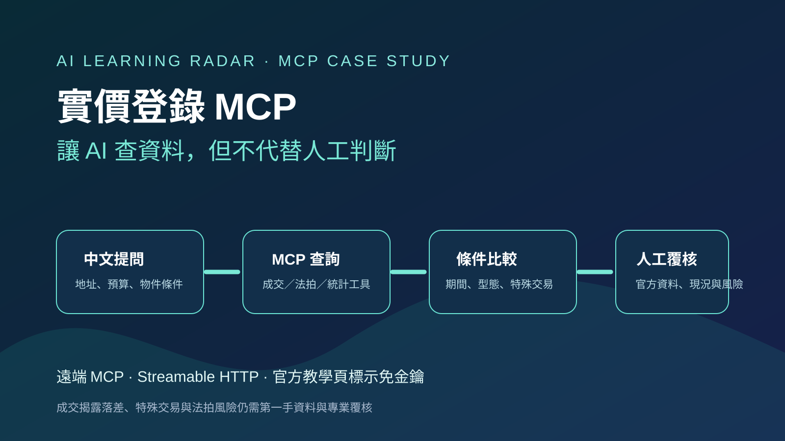

Threads｜ToEstate 實價登錄 MCP：在 ChatGPT、Claude 直接查房價與法拍資料

一句話摘要
這是把房地產資料查詢接到 AI 對話的 MCP：可以用自然語言提問，但正確用法是把它當成「快速找資料、分組、比較與產生待核對清單」的助手，而不是自動估價或投標決策器。
這篇 Threads 說了什麼
ToEstate 的貼文主張，將 MCP 接上 Claude 或 ChatGPT 後，可直接詢問同棟／附近近期成交、新案單價比較、法拍底價相對市價是否有折價、以及點交等問題。貼文稱服務會檢索 630 多萬筆實價登錄，並逐筆列出比較依據。
同一串作者補充，可把 `https://toestate.tw/mcp` 貼給 AI 使用；另連到 MCP 教學頁。貼文內的 630 多萬筆資料量、社群展示結果與當下免費狀態屬來源主張，正式決策前仍應重新查核。
官方教學頁可確認的內容
ToEstate 的 MCP 教學頁目前公開說明：
- 連線端點為 `https://toestate.tw/mcp`。
- 技術型態為遠端 MCP（Model Context Protocol）伺服器，使用 Streamable HTTP，頁面標示免金鑰。
- 教學頁提供 ChatGPT、Claude 網頁／桌面／手機、Claude Code、Cursor、VS Code 與 Gemini CLI 等入口的設定分類。
- 頁面將可用問題涵蓋實價登錄與統計、社區近期成交、開價比較、租金、捷運周邊社區、區域比較、法拍、土地與投資機會雷達等。
- 開發者工具清單區塊顯示 55 個工具；實際工具與參數應以 MCP 伺服器連線時回傳的最新描述為準。
建議的使用流程
- 先問可驗證的描述題，而非直接問「值不值得買」。例如：依屋齡、型態、樓層與交易日期列出可比較成交，並標記可能的特殊交易。
- 要求輸出資料期間、篩選條件、樣本數與每筆來源，確認 AI 不是把不同物件類型混在一起。
- 對開價或法拍案，先把 MCP 的答案當初篩：再回內政部實價登錄、法院公告、謄本／現況與現場條件逐一核對。
- 明確把「市場成交資料」、「模型推估」與「投標／議價建議」分開。價格折讓不代表風險已被排除。
- 連接外部 MCP 前，閱讀服務條款與隱私說明；避免把身分證、完整財務、未公開出價或不必要的個資直接輸入對話。
可直接複製的提問方式
新北市永和區竹林路 100 號 4 樓、約 30 坪老公寓，目前有哪些可比較成交？請列出資料期間、屋齡、型態、樓層、單價與總價，標記特殊關係交易或其他不適合直接當行情的樣本；最後說明哪些條件仍需人工確認。
台北市 3,000 萬內、屋齡 15 年內、距捷運 500 公尺的社區有哪些？請區分成交事實、目前開價與推估，不要把開價當成交價，並附每一項資料來源和更新日期。
這件法拍案請整理法院公告、底價、可比較成交與點交／占用／租賃／持分等風險。請把已確認事實、待查資料與不能僅靠成交資料判定的事項分開列出；不要直接給投標指令。
為什麼值得收進 AI 學習雷達
MCP 讓 AI 從「只會摘要網頁」進到「能取得有結構的工具結果，再做條件式比較」；房地產是很直觀的案例。但它也提醒了 MCP 導入的基本紀律：先了解工具資料來源與限制、保留輸出依據、對高風險決策加人工覆核，並將外部連接視為資料與權限邊界的一部分。
原始連結
- Threads 分享：https://www.threads.com/share/_sK2YzS-I/
- Threads 原文：https://www.threads.com/@toestate.tw/post/DeEFKXBkYXI
- ToEstate MCP 教學：https://toestate.tw/mcp-guide
- MCP 連線端點：https://toestate.tw/mcp